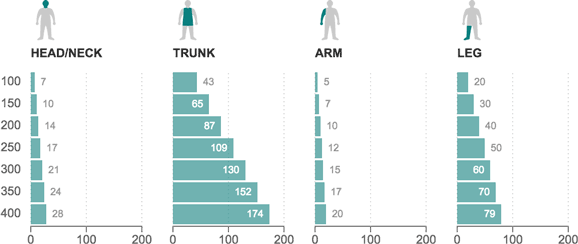

How much each body part might weigh for a man at different body weights (in pounds)

Notes
- The average weight distribution did not differ greatly between women and men.
- “Arm” includes the upper arm, forearm and hand.
- “Leg” includes the thigh, shank and foot.